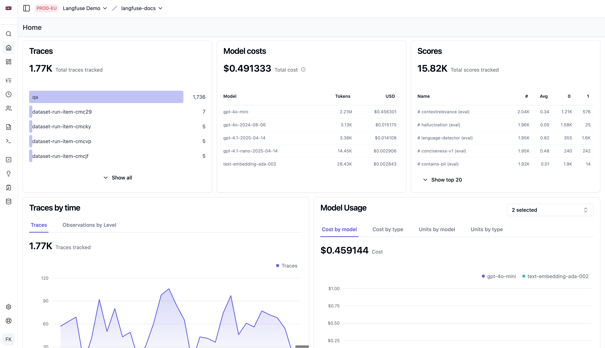
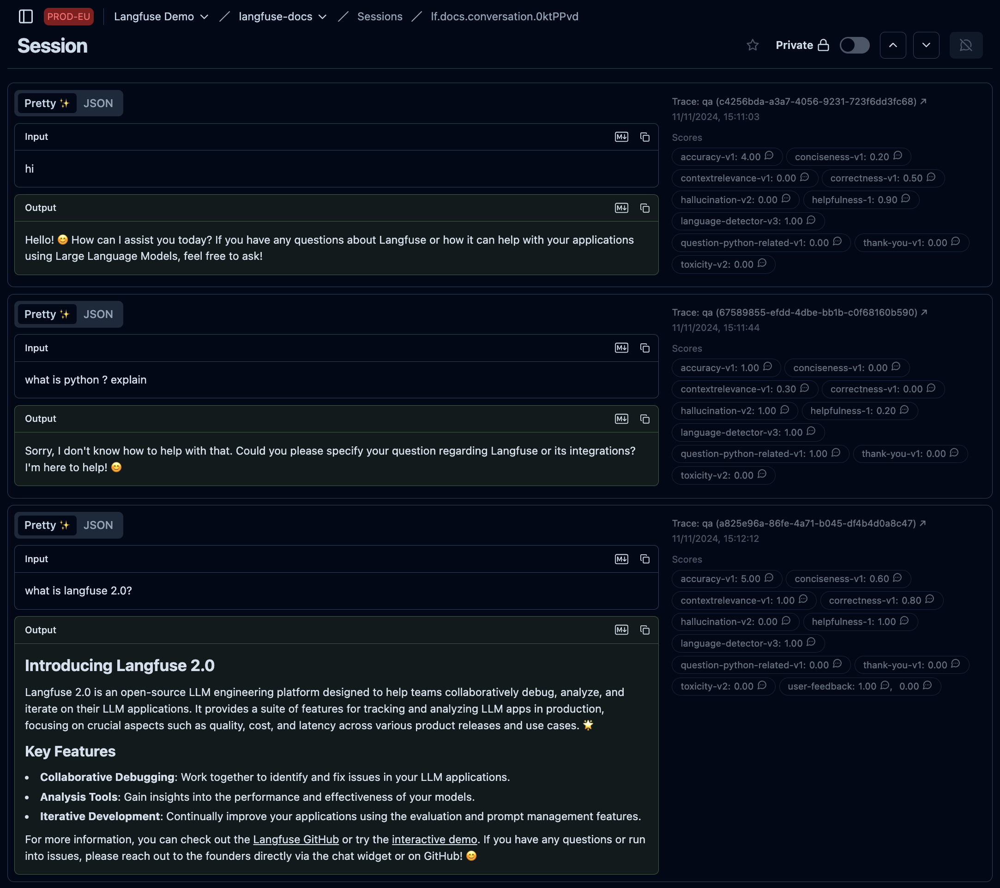
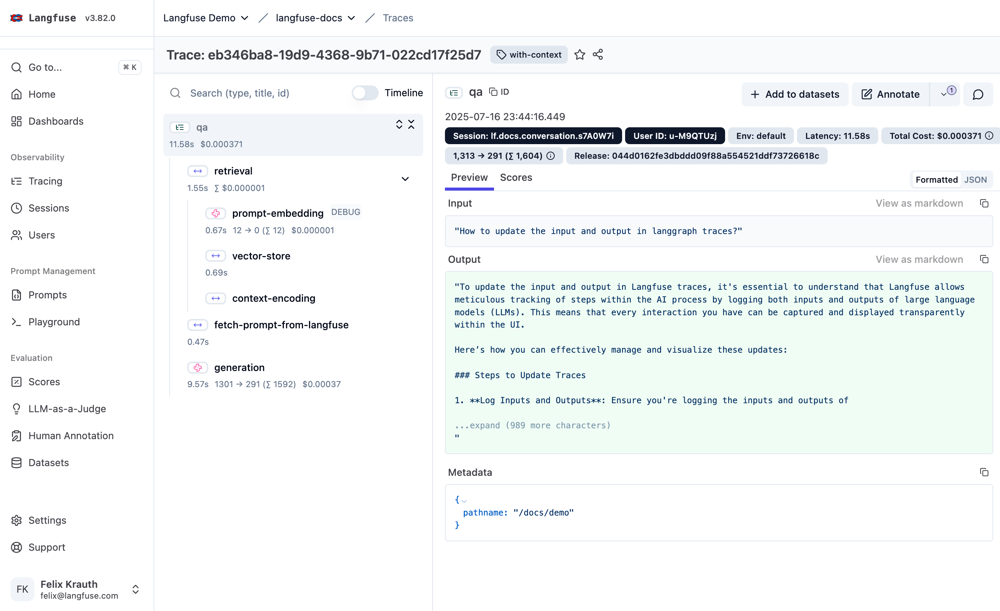
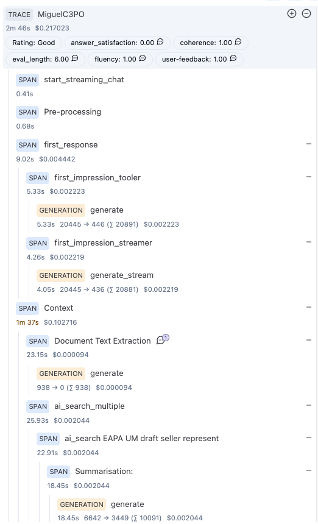
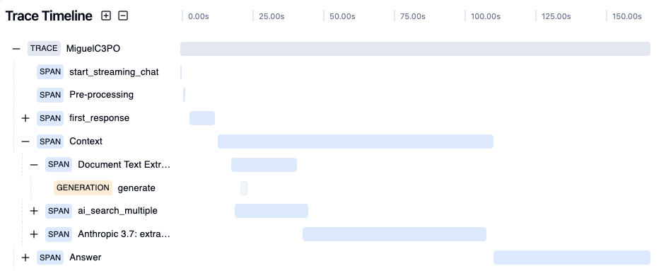

The gold mine, told through actual work.
I'd spent years inferring intent from click patterns. Now I was just… reading it.
They publish whole roadmaps from this. Do you have this view of your own users?
And the prompts? They're not even on this chart. They're inside Claude, ChatGPT, Gemini — places your tags can't reach.
Update the AI to match reality, not expectation — and every question since becomes a node of shared institutional memory.
How do you actually analyse thousands of prompts? Text, not numbers.
Sound familiar? It's funnels and segments. Just different raw material.
Same analytics discipline — radically better data.




